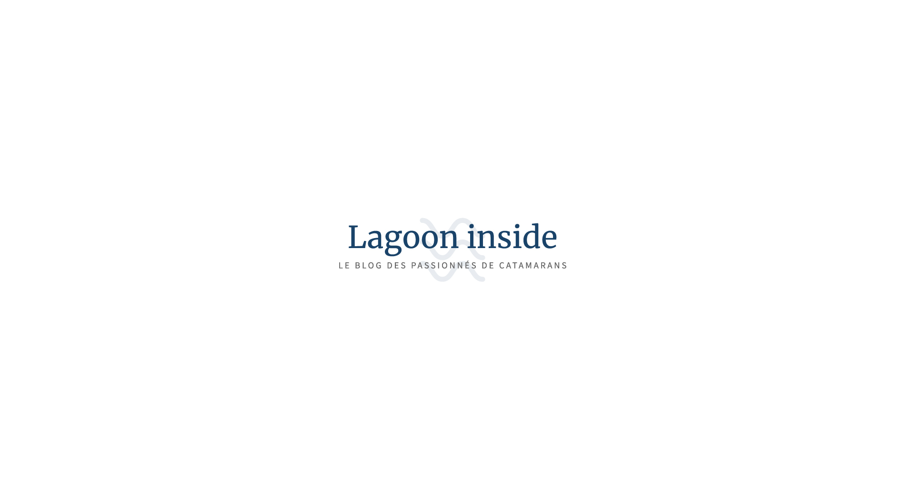
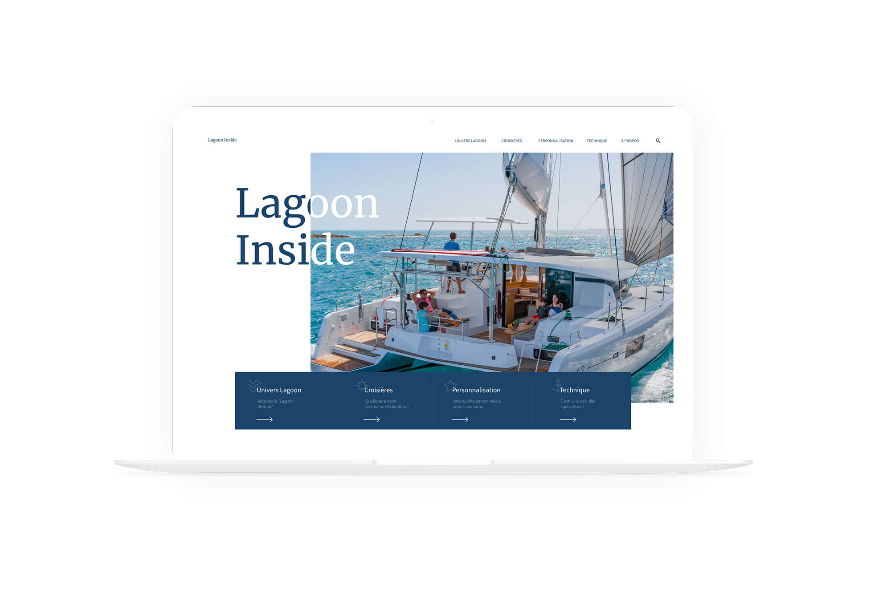
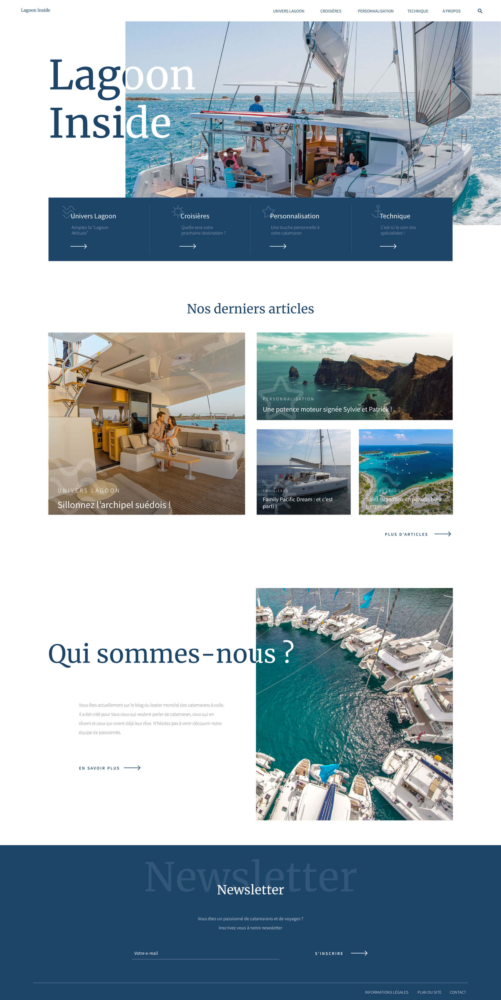
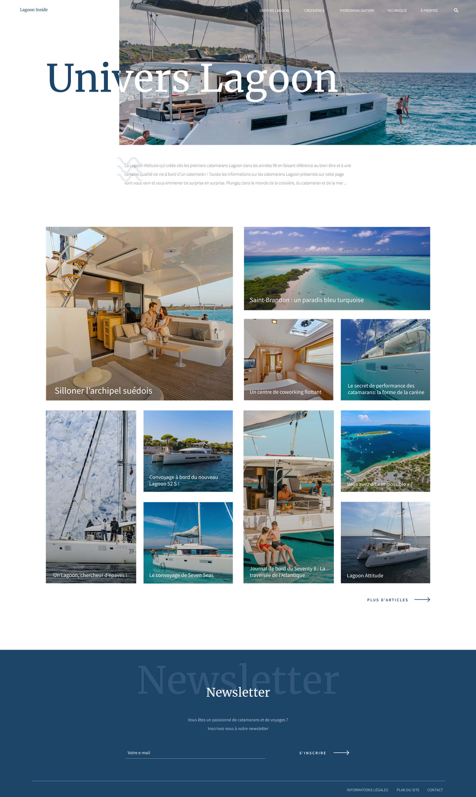
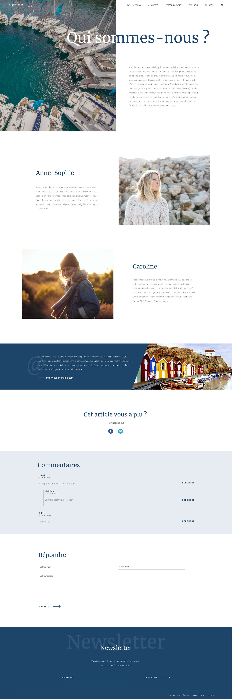
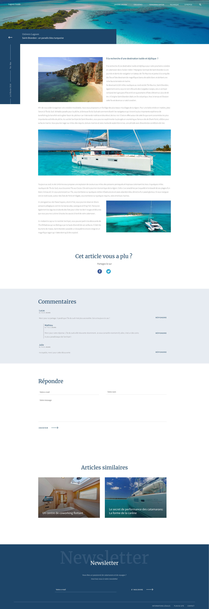

Lagoon Inside
Web design
Année
2019
équipe
Antonin Stephany
Bienvenue sur le blog du leader mondial des catamarans à voile. Le but est simple : vous faire entrer à l’intérieur du monde Lagoon avec le chantier, les employés, les catamarans, les croisières… En bref, ce blog est fait pour tous ceux qui veulent parler de catamaran, ceux qui en rêvent et ceux qui vivent déjà leurs rêves.
Typographie
Merriweather
regular
ABCDEFGHIJKLMNOPQRSTUVWXYZ
abcdefghijklmnopqrstuvwxyz
0123456789
abcdefghijklmnopqrstuvwxyz
0123456789
Source Sans
light - regular - semibold
ABCDEFGHIJKLMNOPQRSTUVWXYZ
abcdefghijklmnopqrstuvwxyz
0123456789
abcdefghijklmnopqrstuvwxyz
0123456789
Couleurs
Projet





